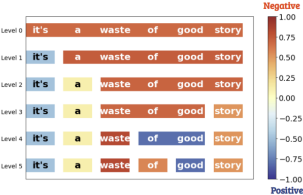

Housam Babiker
PhD in Computing Science
University of Alberta
University of Alberta
Housam Babiker received his PhD in Computing Science degree from the University of Alberta, Canada. During the doctoral study, he developed explainable AI techniques for deep learning, mainly in the natural language processing (NLP) domain, working at the Explainable Artificial Intelligence (XAI) lab under the supervision of Prof. Randy Goebel. Housam's research interests include explainable AI, deep learning, reinforcement learning and their applications to real-world problems.
News
- Jan 2026: A new preprint on multi-task learning is available. [Paper]
- Oct 2025: A new preprint investigating the explainability and interpretability of large language models (LLMs) is available. [Paper]
- July 2023: Our work on learning intermediate representations for hierarchical explanations is accepted in ECAI 2023.
- July 2023: Our work on explaining RL agents for autonomous driving actions is accepted in ITSC 2023.
- March 2023: Defended the PhD thesis.
- August 2022: Our paper entitled "Locally Distributed Activation Vector for Feature Attribution" was accepted to COLING 2022 in Gyeongju, South-Korea.
- June 2022: Our paper entitled "Neural Networks with Feature Attribution and Contrastive Explanations" was accepted to ECML-PKDD 2022 in Grenoble, France.
- May 2022: Presented our poster: Self-explainable models in natural language processing in AI Week 2022 in Edmonton, Canada.
- Nov 2021: Our paper entitled "A Multi-Component Framework for the Analysis and Design of Explainable Artificial Intelligence" was published in the Machine Learning and Knowledge Extraction journal.
Research
Research on making deep learning and deep reinforcement learning more interpretable and explainable is receiving much attention. One of the main reasons is the application of deep learning models to high-stake domains. Also, using explanations as a proxy for debugging models so that we could improve performance, learn new insights, and also use explanations as a proxy for compression and distillation. In general, interpretability is an essential component for deploying deep learning models. In my doctoral research, I worked on explainability and robustness of deep learning, primarily in the NLP domain. My general research interests include Explainable AI, Deep Learning, and Foundation Models for Decision Making, such as Transformers and Transfer Learning.
Research Articles

From Intermediate Representations to Explanations: Exploring Hierarchical Structures in NLP
ECAI, 2023, Acceptance rate: 24%


Neural Networks with Feature Attribution and Contrastive Explanations
ECML-PKDD, 2022, Acceptance rate: 26%

DISK-CSV: Distilling Interpretable Semantic Knowledge with a Class Semantic Vector
EACL 2021, Acceptance rate: 23%


A Multi-Component Framework for the Analysis and Design of Explainable Artificial Intelligence
Machine Learning and Knowledge Extraction Journal, 2021

Selected Awards
- Highest performance on task 4 of the COLIEE Competition, Japan, 2018.
- GSA Travel Award, University of Alberta, Canada, 2017.
- Full Doctoral Scholarship: Awarded by the Computing Science Department of the University of Alberta, Canada, 2016.